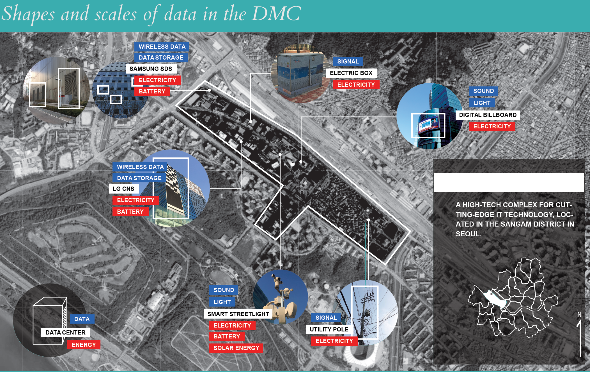
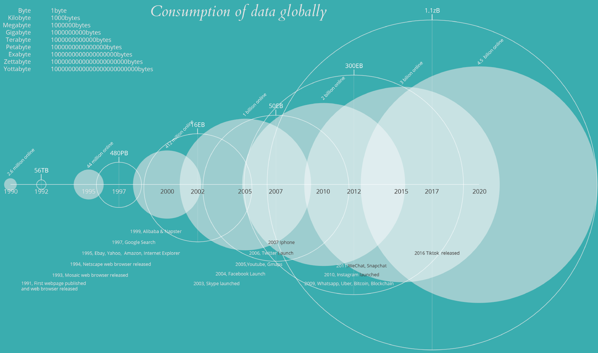

Data and the City
Posted on April 22, 2020 by Tony Cho
If the last century of South Korea’s history can be characterized by rapid urbanization, Seoul’s Digital Media City stands as an ideal artifact for examining South Korea’s rapid succession. The general framework for this accelerating economic growth was South Korea’s decision to invest in the entertainment and IT sector when the country fell to hard times in 1997. For a country that had very little in the means of natural resources, it was perhaps one of few strategies that were viable at the time. In fact many Koreans use this to describe their own country saying that while Europe may develop its tourism, China its factories, Korea develops its human resources. Due to these investments, South Korea is home to one the most tech savvy general populations. Known for having one of the fastest internet speeds globally, the average internet speed calculates to 28.6 megabits per second which is four times faster than the average speed of the internet globally. Add to this the fact that more than 95% of its population have access to mobile internet and smartphones, one can imagine that data consumption, especially through the entertainment content is extremely high in Korea.
While the exponential rise of data consumption and the energy consumed from data consumption presents a globalized problem, it holds a distinct and unique space in South Korea, as the country’s aspirations, and legacy is tied to the idea of growing more data. Data consumption is both encouraged through the highly disciplined and focused development of entertainment (2020 was an especially remarkable year with Bong Joon Ho’s Parasite and the rise of BTS), and South Korea’s national drive to create a competitive IT industry (Samsung, LG, and SK Telecom’s early 5G rollout). The manifestation of this unidirectional national push is soon nowhere as clearly as Seoul’s Digital Media City. From the years of 1978 to 1993 the current zone of the Digital Media City was a massive landfill for Seoul’s garbage. Founded in 1997 as part of a larger proposal called the Millennium City project, the DMC was built with a vision to house leading technology and entertainment companies. With the Seoul Metropolitan Government providing IT broadband and wireless networks to serve the area and through other subsidies, the government was able to attract several IT and cultural agencies to make the Digital Media City their home. It is in the closer examination upon the physical/urban landscape of the site itself that presents clues as to how such data consumption and the consumption of energy that goes into these centers go unnoticed.
From the years of 1978 to 1993 the current zone of the Digital Media City was a massive landfill for Seoul’s garbage. Founded in 1997 as part of a larger proposal called the Millennium City project, the DMC was built with a vision to house leading technology and entertainment companies. With the Seoul Metropolitan Government providing IT broadband and wireless networks to serve the area and through other subsidies, the government was able to attract several IT and cultural agencies to make the Digital Media City their home. It is in the closer examination upon the physical/urban landscape of the site itself that presents clues as to how such data consumption and the consumption of energy that goes into these centers go unnoticed.
When first entering the Digital Media City, one is met with flat and faceless facades. These huge buildings are supposedly where server farms are kept. Unlike the US where there seems to be almost an infinite amount of acreage, South Korea is limited in its land. That is why instead of the wide and hidden data centers of Google/Microsoft/Amazon, there exists these massive server farms in the urban landscapes like Seoul. However server farms are not the only elements of data consumption that live in this ecosystem. In an effort to make the area look ‘high tech’, urban planners had planned a significant number of media facades or electric billboards to be part of the ‘high tech aesthetic’. Alongside these E-Billboards and on the streets are heavy duty speakers surrounding the top of a metal post. On this metal post also sits branches of CCTVs monitoring the landscape, all 360 degrees. All these elements point toward a necessity for data, and the consumption of data- an architectural manifestation of South Korea’s national aspirations. While data presents itself as a core component of the creation of the Digital Media City, the hazards of data and increased IT presence is deliberately made to blend in and even made hidden within the urban landscape. The first pieces of evidence are electrical boxes that can be found on the street neatly cased in thick metal and wrapped with friendly graphics that merely say to conserve electricity to no particular audience. The electric boxes are present on sidewalks and corners of streets, hiding in plain sight, usually being ignored by citizens. Another observation one can make is the design of ventilators which emit heat from the data centers. In fact it is the deliberately hidden design/nature of ventilators that may be the biggest violator in citizens having any sort of literacy for data consumption when it comes to the urban landscape. Within the DMC area ventilators are found to be in the back of buildings in streets that people rarely frequent. And for the ventilators that are in more public locations they are covered with metal lattice structures, or wooden frames. Unless you were looking for them you would not know that these objects are indeed ventilators. Some buildings opt to go the more natural route by planting tall trees in front of ventilators to hide where the heat comes from, or even opting for a pile of stones to cover up exactly how much energy transmission there is in the building. As these huge data centers sit tall, flat and smooth, any sort of heat that comes from these buildings are covered up and made to look sterile and cold. Not only is the presence of heat emissions hidden to those around the area, Digital Media City has an eerily stale tone to the land. On inspection it was noticed in particular that there was a lack of presence of animals within the area. And while no conclusive evidence was gathered during the visit, it would not be hard to suggest the presence of EM radiation being one of the causes for animals avoiding this data saturated landscape.
Because of Korea’s nationwide legacy of generating soft power and investment in IT it may be a very long while before citizens in Korea become concerned with the environmental impacts of unhealthy amounts of data that can be consumed by the average South Korean resident.